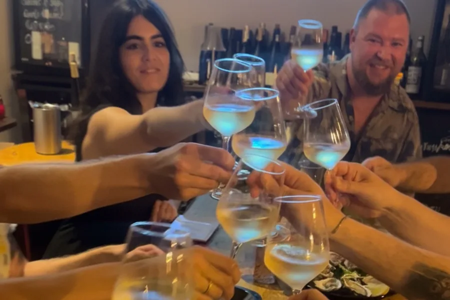

Lisbon · Evening
Graça & Anjos After Dark
Four handpicked stops through Graça and Anjos, two of Lisbon's most characterful neighbourhoods — independent wine bars, honest petiscos, and the city after dark. Three to four hours, private transport included.
June rates · summer pricing from July